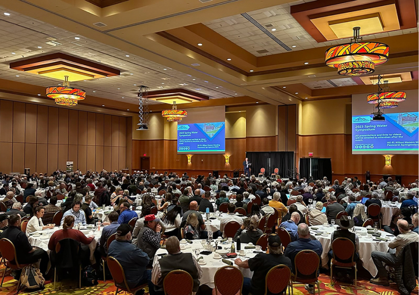
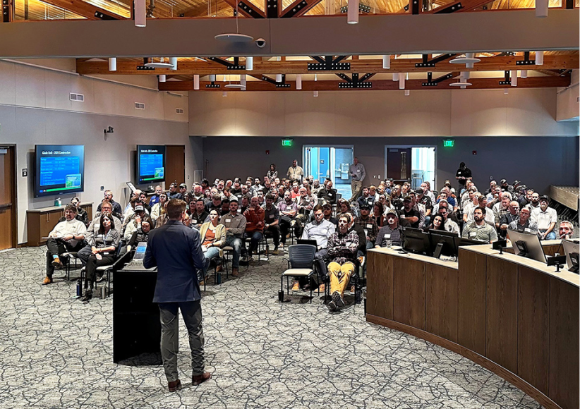
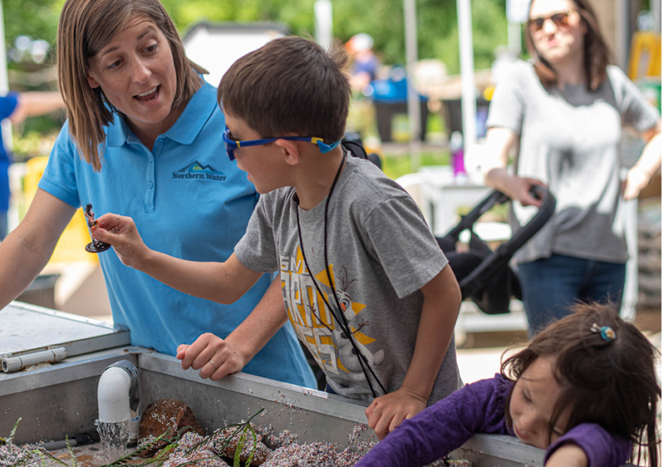
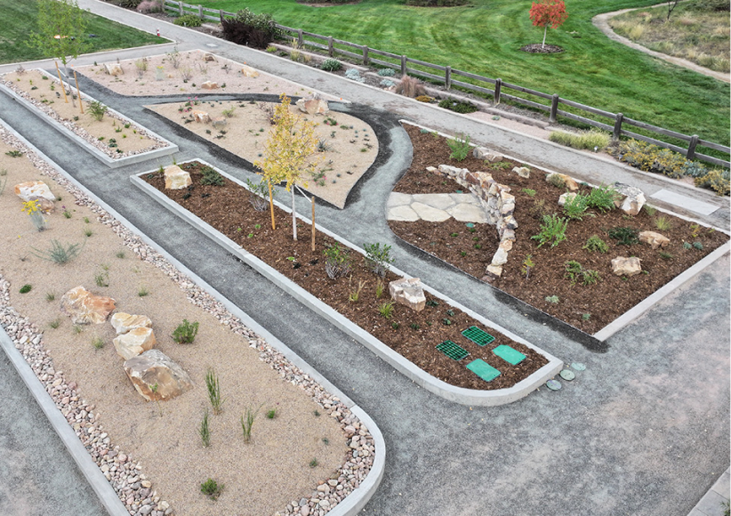

The Northern Water Board of Directors
allocated 23,000 acre-feet of Regional Pool Program water
during its May 8, 2025, Board meeting.

Hundreds Hear About Latest Water Activities at Symposium
About 400 people interested in water and regional issues
gathered Tuesday, April 8, for the annual Spring Water
Symposium.

Contractors Gather to Learn About NISP Next Steps
Nearly 150 industry representatives gathered on Wednesday,
April 16, to learn more about the contracting and
construction process for the Northern.
Date Set for 2025 Conservation Gardens Fair
After a six-year hiatus caused by a global pandemic and the
redevelopment of the Northern Water campus in Berthoud, the
annual Conservation Gardens Fair is returning.

FROM THE ARCHIVES: Game Ramps Get Installed on the...
About 400 people interested in water and regional issues
gathered Tuesday, April 8, for the annual Spring Water
Symposium.
Smart Watering: Maximizing Irrigation Efficiency This S...
As spring ushers in warmer temperatures, it's time to bring
irrigation systems back online. However, turning water on
isn't enough as it's crucial to ensure your system.
Northern Water Increases C-BT Quota to 70 Percent
As spring ushers in warmer temperatures, it's time to bring
irrigation systems back online. However, turning water on
isn't enough as it's crucial to ensure your system.

Conservation Gardens in Berthoud Add Features Tha..
The Water Efficiency team has added five new demonstrations
to the Conservation Gardens to inspire both commercial and
residential garden installations.
Chimney Hollow Reservoir: Final Valves Arrive
Chimney Hollow Reservoir crews celebrated recently as the
final two valves arrived from Germany. Workers will install
the two crucial components inside the valve house by the...